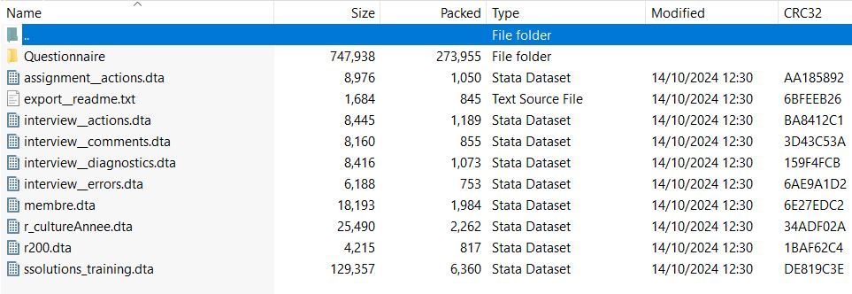

library(tidyverse) # Data management
library(haven) # Import the stata files3 Data Import
3.1 Introduction
After downloading the data, the next step is to import it into your programming environment for analysis. This section on data import is essential because Survey Solutions stores the downloaded data in a specific format. In our download script, we specified export_type='STATA', which I prefer because STATA files include both variable labels and value labels, eliminating the need to redefine them. Additionally, note that the downloaded data is in a zipped format. If you have two versions of a questionnaire, you’ll receive two separate zipped files. There are two ways you can import this data into R:
Manual Import: Unzip each folder and then import the individual files into your programming environment.
Automated Import: Use a script to handle all the importing procedures, streamlining the process.
Our focus will be the second one.
3.2 Automated Import
Using a script to automate the import process is generally more efficient than manually unzipping and importing individual files. Here are some reasons why:
Time-Saving: A script can process multiple files in a single run, eliminating the need for repetitive manual actions.
Reduced Errors: Automating the process minimizes the risk of human error that can occur during manual imports, such as skipping files or importing them incorrectly.
Consistency: A script ensures that the same import process is followed every time, leading to consistent results.
Scalability: If the number of files or datasets increases, a script can easily accommodate the additional data without requiring more manual effort.
Easy Adjustments: If changes are needed (e.g., modifying file paths or import settings), you can update the script instead of repeating the manual steps.
3.3 Survey Solutions Data Structure
Before diving into data importation, it’s crucial to understand the structure of the zipped directory and its contents from Survey Solutions. This knowledge will help you navigate the files efficiently and ensure that you are importing the correct data. The naming convention is questionnaire-name_versionnumber_Exporttype_All.zip. Example ssolutions_training_1_STATA_All.zip.

The contents include the data and metadata:
3.3.1 Metadata Files
These files provide additional context about the data. The include:
assignment_actions
interview_actions
interview_comments
interview_diagnostics
interview_errors
Questionnaire: A directory containing the questionnaire
3.3.2 Data Files
The data files are the core components of the downloaded dataset from Survey Solutions. Here’s a closer look at their significance and structure:
Main Questionnaire File:
- This file is named after the questionnaire itself and serves as the primary dataset containing the survey responses. The questionnaire variable is crucial here, as it uniquely identifies the survey you conducted. This unique name allows you to easily reference and manage the data throughout your analysis. In this context it is ssolutions_training
Roster Datasets:
In addition to the main questionnaire file, there may be several additional files that contain data from rosters. Rosters are used in surveys to collect information on groups of similar items or respondents (e.g., household members, patients, etc.).
Each roster file contains responses related to specific sections of the questionnaire and may include variables corresponding to individual roster entries.
3.4 Import Data in R
Now that you understand the data structure and the contents of the zipped files from Survey Solutions, let’s dive into the process of importing this data into R. Importing data correctly is crucial for effective management and analysis.
The packages for use include:
The body of the code is below:
# | include: false
#---- List all the zip files. These are different versions of the questionnaire
all_zips <- list.files("data", pattern = "ssolutions_training.*.zip",
full.names = T)
# ---- Download main questionnaire
all_ssolutions_training <- vector("list")
for (zipfile in all_zips){
qversion <- str_extract(zipfile, "_\\d+_STATA_")
qversion <- parse_number(qversion)
unzip(zipfile, files = c("ssolutions_training.dta"),
exdir = "data")
all_ssolutions_training[[zipfile]] <- read_dta("data/ssolutions_training.dta") |>
mutate(quiz_version = qversion)
}
ssolutions_training <- all_ssolutions_training |>
map(bind_rows, .progress = TRUE) |>
list_rbind()
ssolutions_training# A tibble: 1 × 184
interview__key interview__id village_code village_name compound_head idhh
<chr> <chr> <chr> <chr> <chr> <chr>
1 28-20-96-94 93cb84617cfd475a… 100 Nyadimo Kambusa 10-2…
# ℹ 178 more variables: name_hh_head <chr>, staff_name <dbl+lbl>,
# idMenage <chr>, visit_no <dbl>, dateEntree <chr>, respondent_text <chr>,
# nomChefMenage <chr>, QM11 <dbl>, QM12 <dbl>, QM13 <dbl>, QM14 <dbl>,
# QM14b <dbl>, QM15 <dbl>, QS01 <dbl+lbl>, QS01_o <chr>, QS02 <dbl+lbl>,
# QS02_o <chr>, QS03 <dbl+lbl>, QS03_o <chr>, QS04 <dbl+lbl>, QS04_o <chr>,
# QS05 <dbl+lbl>, QS05_o <chr>, QS06 <dbl+lbl>, QS06_o <chr>, QS07 <dbl+lbl>,
# QS07_o <chr>, QS08 <dbl+lbl>, QS08_o <chr>, QS09 <dbl+lbl>, …# ---- Save the main questionnaire
write_rds(ssolutions_training, "data/ssolutions_training_main.rds")
# ---- Download the rosters
all_membre <- vector("list")
all_cultureanne <- vector("list")
all_r200 <- vector("list")
for (zipfile in all_zips){
qversion <- str_extract(zipfile, "_\\d+_STATA_")
qversion <- parse_number(qversion)
unzip(zipfile, files = c("membre.dta", "r_cultureAnnee.dta", "r200.dta"),
exdir = "data")
all_membre[[zipfile]] <- read_dta("data/membre.dta") |>
mutate(quiz_version = qversion)
all_cultureanne[[zipfile]] <- read_dta("data/r_cultureAnnee.dta") |>
mutate(quiz_version = qversion)
all_r200[[zipfile]] <- read_dta("data/r200.dta") |>
mutate(quiz_version = qversion)
}
membre <- all_membre |>
map(bind_rows, .progress = TRUE) |>
list_rbind()
cultureanne <- all_cultureanne |>
map(bind_rows, .progress = TRUE) |>
list_rbind()
r200 <- all_r200 |>
map(bind_rows, .progress = TRUE) |>
list_rbind() 3.4.1 Full Script
library(tidyverse) # Data management
library(haven) # Import the stata files
#---- List all the zip files. These are different versions of the questionnaire
all_zips <- list.files("data", pattern = "ssolutions_training.*.zip",
full.names = T)
# ---- Download main questionnaire
all_ssolutions_training <- vector("list")
for (zipfile in all_zips){
qversion <- str_extract(zipfile, "_\\d+_STATA_")
qversion <- parse_number(qversion)
unzip(zipfile, files = c("ssolutions_training.dta"),
exdir = "data")
all_ssolutions_training[[zipfile]] <- read_dta("data/ssolutions_training.dta") |>
mutate(quiz_version = qversion)
}
ssolutions_training <- all_ssolutions_training |>
map(bind_rows, .progress = TRUE) |>
list_rbind()
ssolutions_training |> select(1, 3:5)# A tibble: 1 × 4
interview__key village_code village_name compound_head
<chr> <chr> <chr> <chr>
1 28-20-96-94 100 Nyadimo Kambusa # ---- Save the main questionnaire
write_rds(ssolutions_training, "ssolutions_training_main.rds")
# ---- Download the rosters
all_membre <- vector("list")
all_cultureanne <- vector("list")
all_r200 <- vector("list")
for (zipfile in all_zips){
qversion <- str_extract(zipfile, "_\\d+_STATA_")
qversion <- parse_number(qversion)
unzip(zipfile, files = c("membre.dta", "r_cultureAnnee.dta", "r200.dta"),
exdir = "data")
all_membre[[zipfile]] <- read_dta("data/membre.dta") |>
mutate(quiz_version = qversion)
all_cultureanne[[zipfile]] <- read_dta("data/r_cultureAnnee.dta") |>
mutate(quiz_version = qversion)
all_r200[[zipfile]] <- read_dta("data/r200.dta") |>
mutate(quiz_version = qversion)
}
membre <- all_membre |>
map(bind_rows, .progress = TRUE) |>
list_rbind()
cultureanne <- all_cultureanne |>
map(bind_rows, .progress = TRUE) |>
list_rbind()
r200 <- all_r200 |>
map(bind_rows, .progress = TRUE) |>
list_rbind()
write_rds(membre, "data/membre.rds")
write_rds(cultureanne, "data/cultureanne.rds")
write_rds(r200, "data/r200.rds")3.4.2 Optimised Code
library(tidyverse) # Data management
library(haven) # Import the Stata files
# ---- List all the zip files. These are different versions of the questionnaire
all_zips <- list.files("data", pattern = "ssolutions_training.*.zip",
full.names = TRUE)
# ---- Function to extract and read data
read_data_from_zip <- function(zipfile, file_name, qversion) {
unzip(zipfile, files = file_name, exdir = "data")
read_dta(file.path("data", file_name)) %>% mutate(quiz_version = qversion)
}
# ---- Download main questionnaire
all_ssolutions_training <- map(all_zips, function(zipfile) {
qversion <- parse_number(str_extract(zipfile, "_\\d+_STATA_"))
read_data_from_zip(zipfile, "ssolutions_training.dta", qversion)
})
ssolutions_training <- bind_rows(all_ssolutions_training, .id = "source") # Add a source column if needed
# ---- Save the main questionnaire
write_rds(ssolutions_training, "data/ssolutions_training_main.rds")
# ---- Download the rosters
all_rosters <- map(all_zips, function(zipfile) {
qversion <- parse_number(str_extract(zipfile, "_\\d+_STATA_"))
# Read all roster files into a list
roster_files <- c("membre.dta", "r_cultureAnnee.dta", "r200.dta")
map(roster_files, ~ read_data_from_zip(zipfile, ., qversion))
})
# ---- Combine roster data
membre <- bind_rows(map(all_rosters, `[[`, 1), .id = "source") # First roster: membre
cultureanne <- bind_rows(map(all_rosters, `[[`, 2), .id = "source") # Second roster: r_cultureAnnee
r200 <- bind_rows(map(all_rosters, `[[`, 3), .id = "source") # Third roster: r200
write_rds(membre, "data/membre.rds")
write_rds(cultureanne, "data/cultureanne.rds")
write_rds(r200, "data/r200.rds")